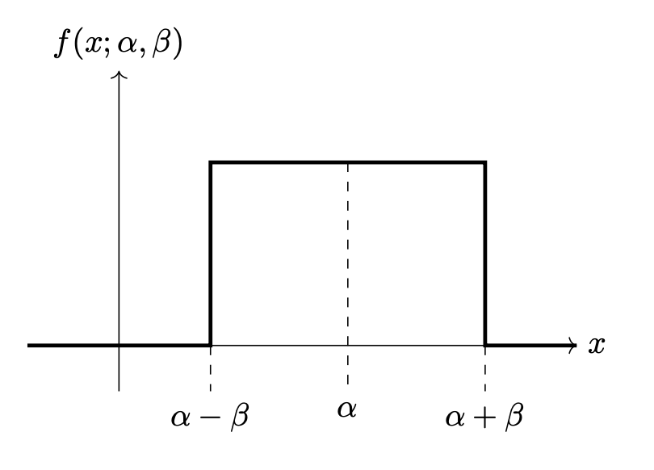

Problems tagged with "maximum likelihood"
Problem #037
Tags: maximum likelihood
Suppose a discrete random variable \(X\) takes on values of either 0 or 1 and has the distribution:
where \(\theta\in[0, 1]\) is a parameter.
Given a data set \(x_1, \ldots, x_n\), what is the maximum likelihood estimate for the parameter \(\theta\)? Show your work.
Problem #039
Tags: density estimation, maximum likelihood
Suppose data points \(\nvec{x}{1}, \ldots, \nvec{x}{n}\) are drawn from an arbitrary, unknown distribution with density \(f\).
True or False: it is guaranteed that, given enough data (that is, \(n\) large enough), a Gaussian fit to the data using the method of maximum likelihood will approximate the true underlying density \(f\) arbitrarily closely.
Solution
False.
Problem #040
Tags: Gaussians, maximum likelihood
Suppose a Gaussian with a diagonal covariance matrix is fit to 200 points in \(\mathbb R^4\) using the maximum likelihood estimators. How many parameters are estimated? Count each entry of \(\mu\) and the covariance matrix that must be estimated as its own parameter.
Problem #051
Tags: maximum likelihood
Suppose a continuous random variable \(X\) has the density:
where \(\theta\in(0, \infty)\) is a parameter, and where \(x > 0\).
Given a data set \(x_1, \ldots, x_n\), what is the maximum likelihood estimate for the parameter \(\theta\)? Show your work.
Problem #053
Tags: Gaussians, maximum likelihood
Suppose a Gaussian with a diagonal covariance matrix is fit to 200 points in \(\mathbb R^4\) using the maximum likelihood estimators. How many parameters are estimated? Count each entry of \(\vec\mu\) and the covariance matrix that must be estimated as its own parameter (the off-diagonal elements of the covariance are zero, and shouldn't be included in your count).
Problem #100
Tags: Gaussians, maximum likelihood
Suppose a univariate Gaussian density function \(\hat f\) is fit to a set of data using the method of maximum likelihood estimation (MLE).
True or False: \(\hat f\) must be between 0 and 1 everywhere. That is, it must be the case that for every \(x \in\mathbb R\), \(0 < \hat f(x) \leq 1\).
Solution
False. Video explanation: https://youtu.be/zvpLrG4FYEc
Problem #102
Tags: maximum likelihood
Consider Justin's rectangle density. It is a parametric density with two parameters, \(\alpha\) and \(\beta\), and pdf:
A picture of the density is shown below for convenience:

In all of the below parts, let \(\mathcal X = \{1, 2, 3, 6, 9\}\) be a data set of 5 points generated from the rectangle density.
Your answers to the below problems should all be in the form of a number. You may leave your answer as an unsimplified fraction or a decimal, if you prefer.
Part 1)
Let \(\mathcal L(\alpha, \beta; \mathcal X)\) be the likelihood function (with respect to the data given above). What is \(\mathcal L(6, 5)\)? Note that \(\mathcal L\) is the likelihood, not the log-likelihood.
Part 2)
What is \(\mathcal L(3, 2)\)?
Part 3)
What are the maximum likelihood estimates of \(\alpha\) and \(\beta\)?
\(\alpha\): \(\beta\):
Solution
Video explanation: https://youtu.be/loc1xv2QNJk
Problem #106
Tags: covariance, maximum likelihood
Consider the following set of 6 data points:
In the below parts, your answers should be given as numbers. You may leave your answer as an unsimplified fraction or a decimal, if you prefer.
Part 1)
What is the (1,2) entry of the sample covariance matrix?
Part 2)
What is the (2,2) entry of the sample covariance matrix?
Solution
Video explanation: https://youtu.be/BvFKfpGVR9k
Problem #113
Tags: covariance, maximum likelihood
Consider the following set of 6 data points:
In the below parts, your answers should be given as numbers. You may leave your answer as an unsimplified fraction or a decimal, if you prefer.
Part 1)
What is the (1,3) entry of the sample covariance matrix?
Part 2)
What is the (1,2) entry of the sample covariance matrix?
Problem #115
Tags: Gaussians, maximum likelihood
Suppose it is known that the distribution of a random variable \(X\) has a univariate Gaussian density function \(f\).
True or False: \(f\) must be between 0 and 1 everywhere. That is, it must be the case that for every \(x \in\mathbb R\), \(0 < f(x) \leq 1\).
Solution
False.